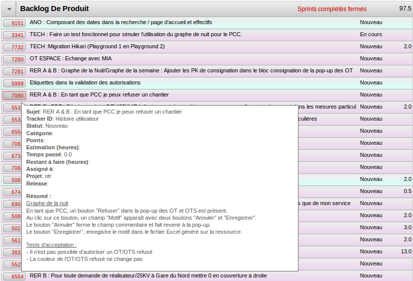
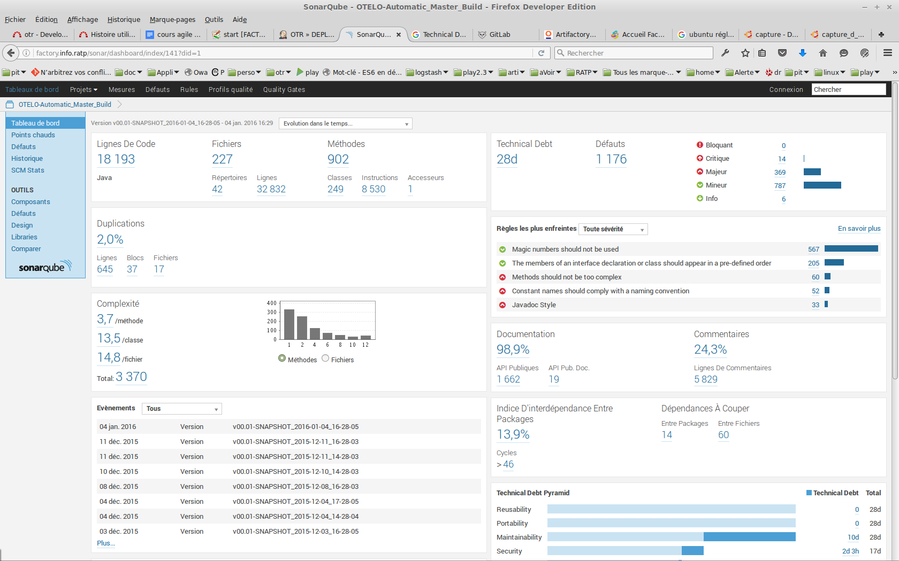
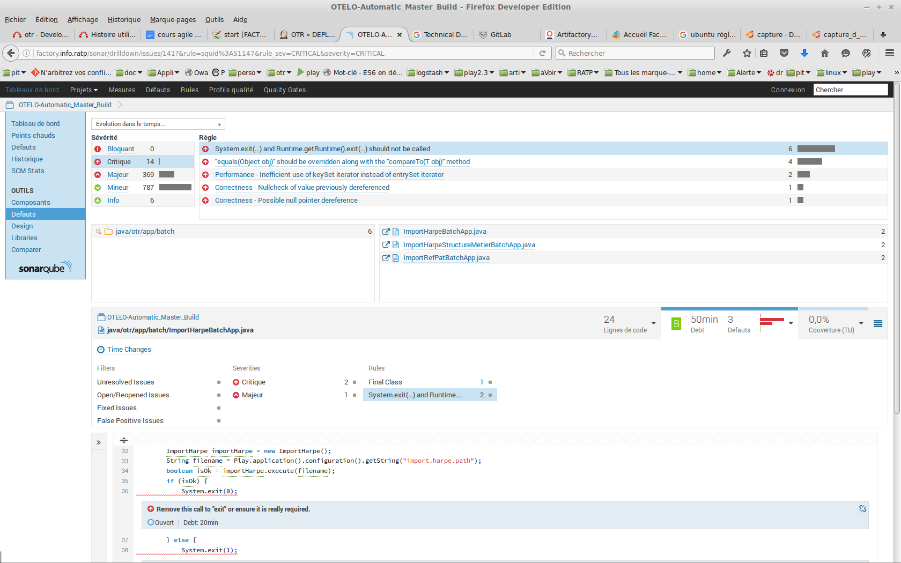

L'agilité
Retour d'experience RATP
Created by Eric Lucas / @zaxxon321
Le contexte projet
Plus l'offre de service en journée est longue, plus la nuit pour l'entretien du matériel est courte. Besoin de planifier aux mieux les chantiers.
Otelo : La planification des travaux de nuit du RER
Otelo : La planification des travaux de nuit du RER
OT = Ordre de Travaux
= 1 chantier de nuit
Les acteurs du projet Otelo
Cycle en V ou Agilité ?

Cycle en V : Non
Pas adapté à un besoin evolutif et pas toujours bien cadré.
Agilité, oui mais c'est quoi ?
Agilité, les critères de réussite
l'Engagement MOA
- Réactivité/disponibilité forte
- Prise en charge de la conduite du changement (formation, documentation)
- Confronter au plus vite un prototype à une population réelle d'utilisateur => feedback
- Respect des délais au détriment du périmètre
Agile - Respect des délais au détriment du périmètre ?
Coût(augmenter l'effectif)Qualitè(on code plus vite mais plus mal)Délai(on retarde la mise en prod)- Périmètre, on reduit ce qu'il y a à faire
Agilité, comment on fait ?
plusieurs méthodeS, on a choisi Scrum(mais on peut s'inspirer aussi de Kanban, Xp, etc..)
Scrum, terminologie Anglophone
Scrum, les valeurs
- On améliore constament le travail de l'équipe: la réunion quotidienne, et la rétrospective de fin de sprint
- On améliore le produit: la démo, et la revue d'itération
- On code propre (dette technique)
- On travaille à un rythme non soutenu
Histoires utilisateurs & Estimation de la dificultés
Redmine+plugin Redmine Backlog (ou Jira, Icescrum)
Estimation de la dificultés
Planning poker : TP Taille des races de chien
Fin TP
Estimation de la dificultés
Résultat ordre croissant
Intérets
- Ceux qui procèdent aux estimations ne doivent pas être influencés par les autres.
- Les sujets (ici des chiens) sont estimés relativement les uns par rapport aux autres, en utilisant des unités floues.
- Les gens ne doivent pas voter sur des sujets qui ne sont pas compris. Ils doivent demander des éclaircissements et, si cela ne relève pas de leur domaine, ils devraient s'abstenir.
En situation projet, On utilise des cartes representant
la Suite de Fibonacci

Itérations / dev
L'equipe MOE - Compétences & Outils
- Reunion quotidienne / Debout 10mn (Daily meeting).
- Curiosité & organisation de sa veille technique.
- Connaissance du stack du projet :
HTML-CSS/Angular.js/REST/Java8/Play/PostgreSQL. - Qualité du code, Refactorer, eviter la dette technique :
- les tests unitaires, d'integrations, voir fonctionnels (TDD).
- les bonnes pratiques (DRY Don’t Repeat Yourself, test, desing Pattern),
- les outils IntelliJ/Ckeckstyle/Git/Sonar/artifactory.
Revue de fin de l'itération
La version en cours
- Tagger (git) / Livrer (jenkins) en environnement de recette,
- Faire une DEMO à la MOA+representants utilisateurs et recueil des remarques,
- Mise à jour du backlog du produit (redmine)
- Retrospective (ameliorer l'itération suivante)

On réitère N fois (fixer en début de projet)
Process de développement
Process de développement & outils
Environnement de développement intégré (IDE)

Gestion des sources
Gestion des sources
Gestion des sources
Jenkins - construction & livraison
Jenkins - construction & livraison
Jenkins - construction & livraison
Sonar - suivi de la qualité du code
Sonar - suivi de la qualité du code
Sonar - suivi de la qualité du code
Sonar - suivi de la qualité du code
Ma veille - termes à googleliser
- manifest agile,
- Redmine + plugin Agile (mais cela peut être du Jira, IceScrum)
- Usine Logiciel (hutson/sonar/maven/artifactory)
- microservice https://www.parleys.com/tutorial/i-dont-always-write-reactive-applications-when-i-do-runs-raspberry-pi-1
- noSql (Cassandra, Neo4J, Redis, etc)
- CQRShttp://blog.octo.com/cqrs-larchitecture-aux-deux-visages-partie-1/
- Domain Driven Designhttp://blog.octo.com/domain-driven-design-des-armes-pour-affronter-la-complexite/
- Java 8 Programmation fonctionnelle (stream), Scala, Play Framework
- Conférences préférées : Parisweb, Devoxx
THE END
Cette presentation est disponible sur
https://github.com/lucaseric
Crédits
- Logiciels & articles : reveal.js, redmine, plugin Redmine Backlog, Jenkins, Sonar, Doggy-Planning,